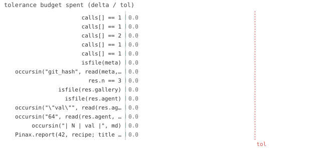

14/14 passed · 11.51s
| id | label | got | want | Δ vs tol (kind) | |
|---|---|---|---|---|---|
| ✓ | t246 | calls[] == 1 @ test_datavault.jl:51 code | 1.0 | 1.0 | 0.0 vs 0.5 (abs) |
| ✓ | t247 | calls[] == 1 @ test_datavault.jl:54 code | 1.0 | 1.0 | 0.0 vs 0.5 (abs) |
| ✓ | t248 | calls[] == 2 @ test_datavault.jl:59 code | 1.0 | 1.0 | 0.0 vs 0.5 (abs) |
| ✓ | t249 | calls[] == 1 @ test_datavault.jl:67 code | 1.0 | 1.0 | 0.0 vs 0.5 (abs) |
| ✓ | t250 | calls[] == 1 @ test_datavault.jl:72 code | 1.0 | 1.0 | 0.0 vs 0.5 (abs) |
| ✓ | t251 | isfile(meta) @ test_datavault.jl:79 code | 1.0 | 1.0 | 0.0 vs 0.5 (abs) |
| ✓ | t252 | occursin("git_hash", read(meta, String)) @ test_datavault.jl:80 code | 1.0 | 1.0 | 0.0 vs 0.5 (abs) |
| ✓ | t253 | res.n == 3 @ test_datavault.jl:120 code | 1.0 | 1.0 | 0.0 vs 0.5 (abs) |
| ✓ | t254 | isfile(res.gallery) @ test_datavault.jl:121 code | 1.0 | 1.0 | 0.0 vs 0.5 (abs) |
| ✓ | t255 | isfile(res.agent) @ test_datavault.jl:122 code | 1.0 | 1.0 | 0.0 vs 0.5 (abs) |
| ✓ | t256 | occursin("\"val\"", read(res.agent, String)) @ test_datavault.jl:123 code | 1.0 | 1.0 | 0.0 vs 0.5 (abs) |
| ✓ | t257 | occursin("64", read(res.agent, String)) @ test_datavault.jl:124 code | 1.0 | 1.0 | 0.0 vs 0.5 (abs) |
| ✓ | t258 | occursin("| N | val |", md) @ test_datavault.jl:126 code | 1.0 | 1.0 | 0.0 vs 0.5 (abs) |
| ✓ | t259 | Pinax.report(42, recipe; title = "x", out = joinpath(tmp, "z")) @ test_datavault.jl:130 code | 1.0 | 1.0 | 0.0 vs 0.5 (abs) |

⤓ downloadout = joinpath(tmp, "site")
build()
Pinax.render(; out=out, vault=vault)
@test calls[] == 1 # first render materializesbuild()
Pinax.render(; out=out, vault=vault)
@test calls[] == 1 # unchanged data -> cache HIT (gen not called)sleep(1.1)
DataVault.mark_done!(vault, key) # data "recomputed" -> .done rewritten
build()
Pinax.render(; out=out, vault=vault)
@test calls[] == 2 # data changed -> cache MISS -> re-materializedcalls[] = 0
out2 = joinpath(tmp, "site2")
build()
Pinax.render(; out=out2) # no vault
@test calls[] == 1sleep(1.1)
DataVault.mark_done!(vault, key)
build()
Pinax.render(; out=out2) # no vault -> still a hit despite data change
@test calls[] == 1build()
Pinax.render(; out=joinpath(tmp, "site3"), vault=vault)
meta = joinpath(vault.outdir, "figure", "phase1", "meta.toml")
@test isfile(meta)@test occursin("git_hash", read(meta, String))# …
# generic helper aggregates val(N) across the swept axis; recipe builds a @table (no plot backend)
recipe = function (pairs)
Ns, vals = Pinax.sweep_mean(pairs, "val", "system.N")
@page :sweep "val(N)" begin
@desc md"auto report from the vault"
@table (N=Ns, val=vals) caption = "val vs swept N"
end
end
res = Pinax.report(vault, recipe; title="Sweep report", out=joinpath(tmp, "rep"))
@test res.n == 3 # discovered all 3 :done keys@test isfile(res.gallery) # human gallery@test isfile(res.agent) # agent.json@test occursin("\"val\"", read(res.agent, String)) # the table reached agent.json@test occursin("64", read(res.agent, String)) # val(8)=64 present (native rows)md = read(joinpath(dirname(res.agent), "agent.md"), String)
@test occursin("| N | val |", md) # LLM-readable table inline@test_throws ErrorException Pinax.report(42, recipe; title="x", out=joinpath(tmp, "z")){kind=link}